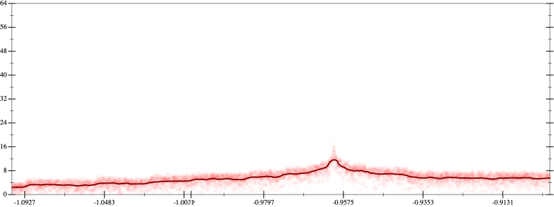
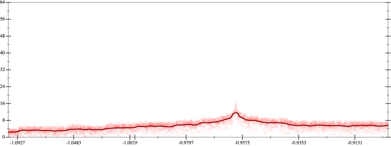

Initial program 5.4
\[\left(\left(\left(0.273438 + -9.84375 \cdot \left(x \cdot x\right)\right) + 54.140625 \cdot \left(\left(\left(x \cdot x\right) \cdot x\right) \cdot x\right)\right) + -93.84375 \cdot \left(\left(\left(\left(\left(x \cdot x\right) \cdot x\right) \cdot x\right) \cdot x\right) \cdot x\right)\right) + 50.273438 \cdot \left(\left(\left(\left(\left(\left(\left(x \cdot x\right) \cdot x\right) \cdot x\right) \cdot x\right) \cdot x\right) \cdot x\right) \cdot x\right)\]
Applied simplify5.2
\[\leadsto \color{blue}{\left(\left(\left(x \cdot 54.140625\right) \cdot {x}^{3} + x \cdot \left(x \cdot -9.84375\right)\right) + 0.273438\right) + \left({x}^{3} \cdot {x}^{3}\right) \cdot \left(-93.84375 + \left(50.273438 \cdot x\right) \cdot x\right)}\]
- Using strategy
rm Applied add-cbrt-cube5.2
\[\leadsto \left(\left(\left(x \cdot 54.140625\right) \cdot {x}^{3} + x \cdot \left(x \cdot -9.84375\right)\right) + 0.273438\right) + \left({x}^{3} \cdot \color{blue}{\sqrt[3]{\left({x}^{3} \cdot {x}^{3}\right) \cdot {x}^{3}}}\right) \cdot \left(-93.84375 + \left(50.273438 \cdot x\right) \cdot x\right)\]
Applied add-cbrt-cube5.2
\[\leadsto \left(\left(\left(x \cdot 54.140625\right) \cdot {x}^{3} + x \cdot \left(x \cdot -9.84375\right)\right) + 0.273438\right) + \left(\color{blue}{\sqrt[3]{\left({x}^{3} \cdot {x}^{3}\right) \cdot {x}^{3}}} \cdot \sqrt[3]{\left({x}^{3} \cdot {x}^{3}\right) \cdot {x}^{3}}\right) \cdot \left(-93.84375 + \left(50.273438 \cdot x\right) \cdot x\right)\]
Applied cbrt-unprod5.2
\[\leadsto \left(\left(\left(x \cdot 54.140625\right) \cdot {x}^{3} + x \cdot \left(x \cdot -9.84375\right)\right) + 0.273438\right) + \color{blue}{\sqrt[3]{\left(\left({x}^{3} \cdot {x}^{3}\right) \cdot {x}^{3}\right) \cdot \left(\left({x}^{3} \cdot {x}^{3}\right) \cdot {x}^{3}\right)}} \cdot \left(-93.84375 + \left(50.273438 \cdot x\right) \cdot x\right)\]
Applied simplify5.2
\[\leadsto \left(\left(\left(x \cdot 54.140625\right) \cdot {x}^{3} + x \cdot \left(x \cdot -9.84375\right)\right) + 0.273438\right) + \sqrt[3]{\color{blue}{{\left({x}^{3}\right)}^{3} \cdot {\left({x}^{3}\right)}^{3}}} \cdot \left(-93.84375 + \left(50.273438 \cdot x\right) \cdot x\right)\]
- Using strategy
rm Applied add-log-exp5.2
\[\leadsto \left(\left(\left(x \cdot 54.140625\right) \cdot {x}^{3} + x \cdot \left(x \cdot -9.84375\right)\right) + 0.273438\right) + \color{blue}{\log \left(e^{\sqrt[3]{{\left({x}^{3}\right)}^{3} \cdot {\left({x}^{3}\right)}^{3}} \cdot \left(-93.84375 + \left(50.273438 \cdot x\right) \cdot x\right)}\right)}\]
Applied add-log-exp5.2
\[\leadsto \color{blue}{\log \left(e^{\left(\left(x \cdot 54.140625\right) \cdot {x}^{3} + x \cdot \left(x \cdot -9.84375\right)\right) + 0.273438}\right)} + \log \left(e^{\sqrt[3]{{\left({x}^{3}\right)}^{3} \cdot {\left({x}^{3}\right)}^{3}} \cdot \left(-93.84375 + \left(50.273438 \cdot x\right) \cdot x\right)}\right)\]
Applied sum-log5.2
\[\leadsto \color{blue}{\log \left(e^{\left(\left(x \cdot 54.140625\right) \cdot {x}^{3} + x \cdot \left(x \cdot -9.84375\right)\right) + 0.273438} \cdot e^{\sqrt[3]{{\left({x}^{3}\right)}^{3} \cdot {\left({x}^{3}\right)}^{3}} \cdot \left(-93.84375 + \left(50.273438 \cdot x\right) \cdot x\right)}\right)}\]
- Using strategy
rm Applied exp-sum5.1
\[\leadsto \log \left(\color{blue}{\left(e^{\left(x \cdot 54.140625\right) \cdot {x}^{3} + x \cdot \left(x \cdot -9.84375\right)} \cdot e^{0.273438}\right)} \cdot e^{\sqrt[3]{{\left({x}^{3}\right)}^{3} \cdot {\left({x}^{3}\right)}^{3}} \cdot \left(-93.84375 + \left(50.273438 \cdot x\right) \cdot x\right)}\right)\]
- Using strategy
rm Applied add-sqr-sqrt5.1
\[\leadsto \log \left(\left(e^{\left(x \cdot 54.140625\right) \cdot {x}^{3} + x \cdot \left(x \cdot -9.84375\right)} \cdot e^{0.273438}\right) \cdot \color{blue}{\left(\sqrt{e^{\sqrt[3]{{\left({x}^{3}\right)}^{3} \cdot {\left({x}^{3}\right)}^{3}} \cdot \left(-93.84375 + \left(50.273438 \cdot x\right) \cdot x\right)}} \cdot \sqrt{e^{\sqrt[3]{{\left({x}^{3}\right)}^{3} \cdot {\left({x}^{3}\right)}^{3}} \cdot \left(-93.84375 + \left(50.273438 \cdot x\right) \cdot x\right)}}\right)}\right)\]
Applied simplify5.0
\[\leadsto \log \left(\left(e^{\left(x \cdot 54.140625\right) \cdot {x}^{3} + x \cdot \left(x \cdot -9.84375\right)} \cdot e^{0.273438}\right) \cdot \left(\color{blue}{\sqrt{{\left(e^{{x}^{3} \cdot {x}^{3}}\right)}^{\left(x \cdot \left(50.273438 \cdot x\right) + -93.84375\right)}}} \cdot \sqrt{e^{\sqrt[3]{{\left({x}^{3}\right)}^{3} \cdot {\left({x}^{3}\right)}^{3}} \cdot \left(-93.84375 + \left(50.273438 \cdot x\right) \cdot x\right)}}\right)\right)\]
Applied simplify5.1
\[\leadsto \log \left(\left(e^{\left(x \cdot 54.140625\right) \cdot {x}^{3} + x \cdot \left(x \cdot -9.84375\right)} \cdot e^{0.273438}\right) \cdot \left(\sqrt{{\left(e^{{x}^{3} \cdot {x}^{3}}\right)}^{\left(x \cdot \left(50.273438 \cdot x\right) + -93.84375\right)}} \cdot \color{blue}{\sqrt{{\left(e^{{x}^{3} \cdot {x}^{3}}\right)}^{\left(x \cdot \left(50.273438 \cdot x\right) + -93.84375\right)}}}\right)\right)\]
 
